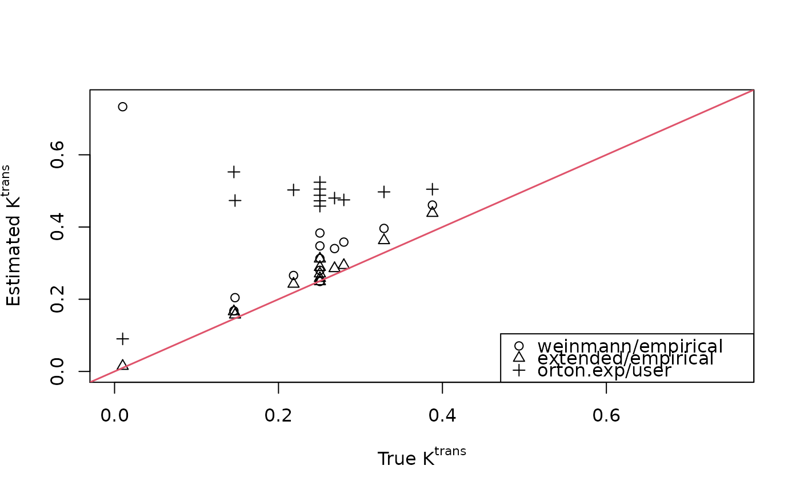
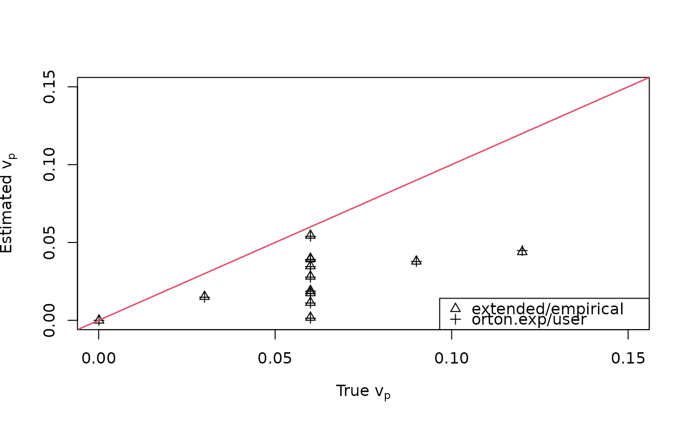

dcemri.lm-methods.RdParameter estimation for single compartment models is performed using literature-based or user-specified arterial input functions. The Levenburg-Marquardt algorithm does the heavy lifting.
dcemri.lm(conc, ...)
# S4 method for array
dcemri.lm(
conc,
time,
img.mask,
model = "extended",
aif = NULL,
control = minpack.lm::nls.lm.control(),
user = NULL,
guess = NULL,
multicore = FALSE,
verbose = FALSE,
...
)| conc | is a multidimensional (1D-4D) array of contrast agent concentrations. The last dimension is assumed to be temporal, while the previous dimensions are assumed to be spatial. |
|---|---|
| ... | Additional parameters to the function. |
| time | is a vector of acquisition times (in minutes) relative to injection of the contrast agent. Negative values should be used prior to the injection. |
| img.mask | is a (logical) multidimensional array that identifies the
voxels to be analyzed. Has to have same dimension as |
| model | is a character string that identifies the type of compartmental model to be used. Acceptable models include:
|
| aif | is a character string that identifies the parameters of the type of arterial input function (AIF) used with the above model. Acceptable values are:
All AIF models set the parametric form and parameter values -- except
|
| control | is a list of parameters used by |
| user | if |
| guess | is a vector of starting values for kinetic parameter
estimation. The vector must have length = 3 (with names |
| multicore | is a logical variable (default = |
| verbose | is a logical variable (default = |
Parameter estimates and their standard errors are provided for the
masked region of the multidimensional array. All multi-dimensional arrays
are provided in nifti format.
They include:
Transfer rate from plasma to the extracellular, extravascular space (EES).
Rate parameter for transport from the EES to plasma.
Fractional occupancy by EES (the ratio between \(K^{trans}\) and \(k_{ep}\)).
Fractional occupancy in the plasma space.
Standard error for \(K^{trans}\).
Standard error for \(k_{ep}\).
Standard error for \(v_p\).
Compartmental models are the solution to the modified general rate equation (Kety 1951). The specific parametric models considered here include the basic Kety model $$C_t(t)=K^{trans}\left[C_p(t)\otimes\exp(-k_{ep}t)\right],$$ where \(\otimes\) is the convoluation operator, and the so-called extended Kety model $$C_t(t)=v_pC_p(t)+K^{trans}\left[C_p(t)\otimes\exp(-k_{ep}t)\right].$$ The arterial input function must be either literature-based (with fixed parameters) or the exponential AIF from Orton et al. (2008) with user-defined parameters.
WARNING: when using the empirical AIF, a linear interpolation
is used to upsample the AIF to a one-second sampling rate. This allows one
to utilize a computationally efficient numeric method to perform the
convolution. If the empirical AIF is sampled faster than one Hertz, then
the upsampling operation will become a downsampling operation. This should
not have any serious effect on the parameter estimates, but caution should
be exercised if very fast sampling rates are used to obtain an empirical
AIF.
Ahearn, T.S., Staff, R.T., Redpath, T.W. and Semple, S.I.K. (2005) The use of the Levenburg-Marquardt curve-fitting algorithm in pharmacokinetic modelling of DCE-MRI data, Physics in Medicine and Biology, 50, N85-N92.
Fritz-Hansen, T., Rostrup, E., Larsson, H.B.W, Sondergaard, L., Ring, P. and Henriksen, O. (1993) Measurement of the arterial concentration of Gd-DTPA using MRI: A step toward quantitative perfusion imaging, Magnetic Resonance in Medicine, 36, 225-231.
Orton, M.R., Collins, D.J., Walker-Samuel, S., d'Arcy, J.A., Hawkes, D.J., Atkinson, D. and Leach, M.O. (2007) Bayesian estimation of pharmacokinetic parameters for DCE-MRI with a robust treatment of enhancement onset time, Physics in Medicine and Biology 52, 2393-2408.
Orton, M.R., d'Arcy, J.A., Walker-Samuel, S., Hawkes, D.J., Atkinson, D., Collins, D.J. and Leach, M.O. (2008) Computationally efficient vascular input function models for quantitative kinetic modelling using DCE-MRI, Physics in Medicine and Biology 53, 1225-1239.
Tofts, P.S., Brix, G, Buckley, D.L., Evelhoch, J.L., Henderson, E., Knopp, M.V., Larsson, H.B.W., Lee, T.-Y., Mayr, N.A., Parker, G.J.M., Port, R.E., Taylor, J. and Weiskoff, R. (1999) Estimating kinetic parameters from dynamic contrast-enhanced \(T_1\)-weighted MRI of a diffusable tracer: Standardized quantities and symbols, Journal of Magnetic Resonance, 10, 223-232.
Tofts, P.S. and Kermode, A.G. (1984) Measurement of the blood-brain barrier permeability and leakage space using dynamic MR imaging. 1. Fundamental concepts, Magnetic Resonance in Medicine, 17, 357-367.
Weinmann, H.J., Laniado, M. and Mutzel, W. (1984) Pharmacokinetics of Gd-DTPA/dimeglumine after intraveneous injection into healthy volunteers, Physiological Chemistry and Physics and Medical NMR, 16, 167-172.
Brandon Whitcher bwhitcher@gmail.com,
Volker
Schmid volkerschmid@users.sourceforge.net
data("buckley")
## Empirical arterial input function
img <- array(t(breast$data), c(13,1,1,301))
time <- buckley$time.min
mask <- array(TRUE, dim(img)[1:3])
## Estimate kinetic parameters directly from Buckley's empirical AIF
fit1 <- dcemri.lm(img, time, mask, model="weinmann", aif="empirical",
user=buckley$input)
fit2 <- dcemri.lm(img, time, mask, model="extended", aif="empirical",
user=buckley$input)
## Set up breast data for dcemri
xi <- seq(5, 300, by=3)
img <- array(t(breast$data)[,xi], c(13,1,1,length(xi)))
time <- buckley$time.min[xi]
input <- buckley$input[xi]
## Generate AIF params using the orton.exp function from Buckley's AIF
(aifparams <- orton.exp.lm(time, input))
#> $AB
#> [1] 37.44682
#>
#> $muB
#> [1] 3.920004
#>
#> $AG
#> [1] 1.522074
#>
#> $muG
#> [1] -0.009832244
#>
#> $info
#> [1] 1
#>
#> $message
#> [1] "Relative error in the sum of squares is at most `ftol'."
#>
fit3 <- dcemri.lm(img, time, mask, model="orton.exp", aif="user",
user=aifparams)
## Scatterplot comparing true and estimated Ktrans values
plot(breast$ktrans, fit1$ktrans, xlim=c(0,0.75), ylim=c(0,0.75),
xlab=expression(paste("True ", K^{trans})),
ylab=expression(paste("Estimated ", K^{trans})))
points(breast$ktrans, fit2$ktrans, pch=2)
points(breast$ktrans, fit3$ktrans, pch=3)
abline(0, 1, lwd=1.5, col=2)
legend("bottomright", c("weinmann/empirical", "extended/empirical",
"orton.exp/user"), pch=1:3)

cbind(breast$ktrans, fit1$ktrans[,,1], fit2$ktrans[,,1], fit3$ktrans[,,1])
#> [,1] [,2] [,3] [,4]
#> [1,] 0.145599052 0.1678452 0.16592766 0.55254849
#> [2,] 0.218344559 0.2658134 0.24219283 0.50264588
#> [3,] 0.250521815 0.3129245 0.27084876 0.48798627
#> [4,] 0.268391926 0.3403433 0.28533489 0.48014076
#> [5,] 0.279725126 0.3582433 0.29400920 0.47516094
#> [6,] 0.009912791 0.7331255 0.01475737 0.09028424
#> [7,] 0.146992146 0.2043296 0.15691602 0.47338401
#> [8,] 0.328712966 0.3961533 0.36284044 0.49722427
#> [9,] 0.387767110 0.4608153 0.43840557 0.50468090
#> [10,] 0.250521815 0.2491542 0.24915417 0.45785051
#> [11,] 0.250521815 0.2801023 0.25820501 0.47252745
#> [12,] 0.250521815 0.3476498 0.28871475 0.50510375
#> [13,] 0.250521815 0.3833826 0.31198211 0.52406079
## Scatterplot comparing true and estimated Ktrans values
plot(breast$vp, fit1$vp, type="n", xlim=c(0,0.15), ylim=c(0,0.15),
xlab=expression(paste("True ", v[p])),
ylab=expression(paste("Estimated ", v[p])))
points(breast$vp, fit2$vp, pch=2)
points(breast$vp, fit3$vp, pch=3)
abline(0, 1, lwd=1.5, col=2)
legend("bottomright", c("extended/empirical","orton.exp/user"), pch=2:3)

cbind(breast$vp, fit2$vp[,,1], fit3$vp[,,1])
#> [,1] [,2] [,3]
#> [1,] 0.0600 1.840405e-03 1.371417e-03
#> [2,] 0.0600 1.754635e-02 1.710091e-02
#> [3,] 0.0600 2.818906e-02 2.771863e-02
#> [4,] 0.0600 3.486796e-02 3.447373e-02
#> [5,] 0.0600 3.933510e-02 3.905019e-02
#> [6,] 0.0600 5.451225e-02 5.395206e-02
#> [7,] 0.0600 3.971422e-02 3.895468e-02
#> [8,] 0.0600 1.899215e-02 1.873550e-02
#> [9,] 0.0600 1.138390e-02 1.112868e-02
#> [10,] 0.0001 1.128819e-17 3.850360e-12
#> [11,] 0.0300 1.521879e-02 1.482669e-02
#> [12,] 0.0900 3.789190e-02 3.776697e-02
#> [13,] 0.1200 4.396546e-02 4.480785e-02